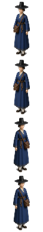

1 윤해주
역관 겸 의술 보조 · 스파이
위조 문답과 복식으로 검문을 통과하고, 문서를 읽고 병자를 치료한다.
Q 변장 · 22초 · 쿨 20초구호소 봉사자로 변함. 삿갓+흰옷. 문답 0/1/2단계, 간파율 ×1.0 / 0.7 / 0.35. 제한 구역·외국인 선원에게는 안 통함.
X 대화 유인 · 사거리 6.5말을 붙여 경비를 지정 칸으로 보냄. 선원(간파 100%)에게는 불가.
그 외치료, 문서 판독, 잠긴 문 열기.
못 함근접 제압 불가. 들통나면 도망 수단 없음.
